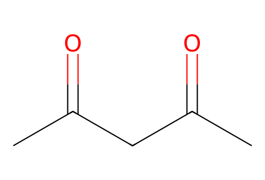
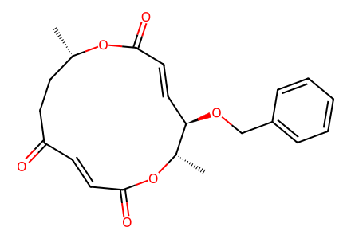
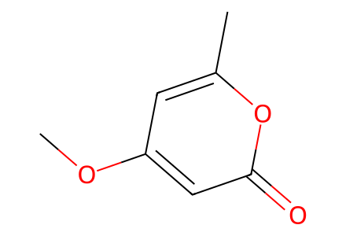
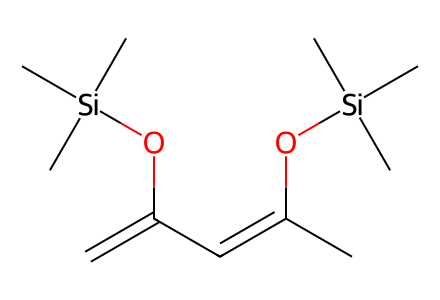
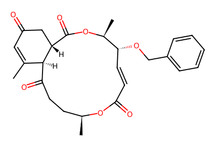
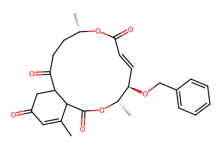
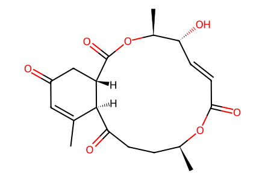

CC(=O)CC(C)=OSource-bound forward preparations in main Scheme 2/Tables 1-2 and SI pp3-4, from literature-known protected 10-keto-acaudiol A (4). Includes diene preparation and the isolated regioisomer. The cited upstream synthesis of 4 is outside this paper. Presumed LR-MS species 10 is not an isolated structure-confirmed preparation. Independent chemical review remains pending. Facts compiled deterministically; independent review pending.
完整 JSON · 逐步 CSV · 路线序列 · SDF · HRMS 核对
| 事件 | 分子连接 | 报告产率 | Canonical reaction SMILES |
|---|---|---|---|
| E01 | acetylacetone → 8 | 63% combined mixture yield | CC(=O)CC(C)=O>>C=C(C=C(C)O[Si](C)(C)C)O[Si](C)(C)C |
| E02 | 4 + 8 → 6 + 9 | 6: 67%; 9: 2% | C=C(C=C(C)O[Si](C)(C)C)O[Si](C)(C)C.C[C@@H]1OC(=O)/C=C/C(=O)CC[C@H](C)OC(=O)/C=C/[C@H]1OCc1ccccc1>>CC1=CC(=O)CC2C(=O)CC[C@H](C)OC(=O)/C=C/[C@@H](OCc3ccccc3)[C@H](C)OC(=O)C12.CC1=CC(=O)C[C@@H]2C(=O)O[C@@H](C)[C@H](OCc3ccccc3)/C=C/C(=O)O[C@@H](C)CCC(=O)[C@@H]12 |
| E03 | 6 → 1 | 1: 55% | CC1=CC(=O)C[C@@H]2C(=O)O[C@@H](C)[C@H](OCc3ccccc3)/C=C/C(=O)O[C@@H](C)CCC(=O)[C@@H]12>>CC1=CC(=O)C[C@@H]2C(=O)O[C@@H](C)[C@H](O)/C=C/C(=O)O[C@@H](C)CCC(=O)[C@@H]12 |
| E04 | 4 + 7 → 6 + 9 | 6: 13%; 9: 5% | COc1cc(C)oc(=O)c1.C[C@@H]1OC(=O)/C=C/C(=O)CC[C@H](C)OC(=O)/C=C/[C@H]1OCc1ccccc1>>CC1=CC(=O)CC2C(=O)CC[C@H](C)OC(=O)/C=C/[C@@H](OCc3ccccc3)[C@H](C)OC(=O)C12.CC1=CC(=O)C[C@@H]2C(=O)O[C@@H](C)[C@H](OCc3ccccc3)/C=C/C(=O)O[C@@H](C)CCC(=O)[C@@H]12 |
| E05 | 6 → 1 | 1: 17% | CC1=CC(=O)C[C@@H]2C(=O)O[C@@H](C)[C@H](OCc3ccccc3)/C=C/C(=O)O[C@@H](C)CCC(=O)[C@@H]12>>CC1=CC(=O)C[C@@H]2C(=O)O[C@@H](C)[C@H](O)/C=C/C(=O)O[C@@H](C)CCC(=O)[C@@H]12 |

CC(=O)CC(C)=O
C[C@@H]1OC(=O)/C=C/C(=O)CC[C@H](C)OC(=O)/C=C/[C@H]1OCc1ccccc1
COc1cc(C)oc(=O)c1
C=C(C=C(C)O[Si](C)(C)C)O[Si](C)(C)C
CC1=CC(=O)C[C@@H]2C(=O)O[C@@H](C)[C@H](OCc3ccccc3)/C=C/C(=O)O[C@@H](C)CCC(=O)[C@@H]12
CC1=CC(=O)CC2C(=O)CC[C@H](C)OC(=O)/C=C/[C@@H](OCc3ccccc3)[C@H](C)OC(=O)C12
CC1=CC(=O)C[C@@H]2C(=O)O[C@@H](C)[C@H](O)/C=C/C(=O)O[C@@H](C)CCC(=O)[C@@H]12